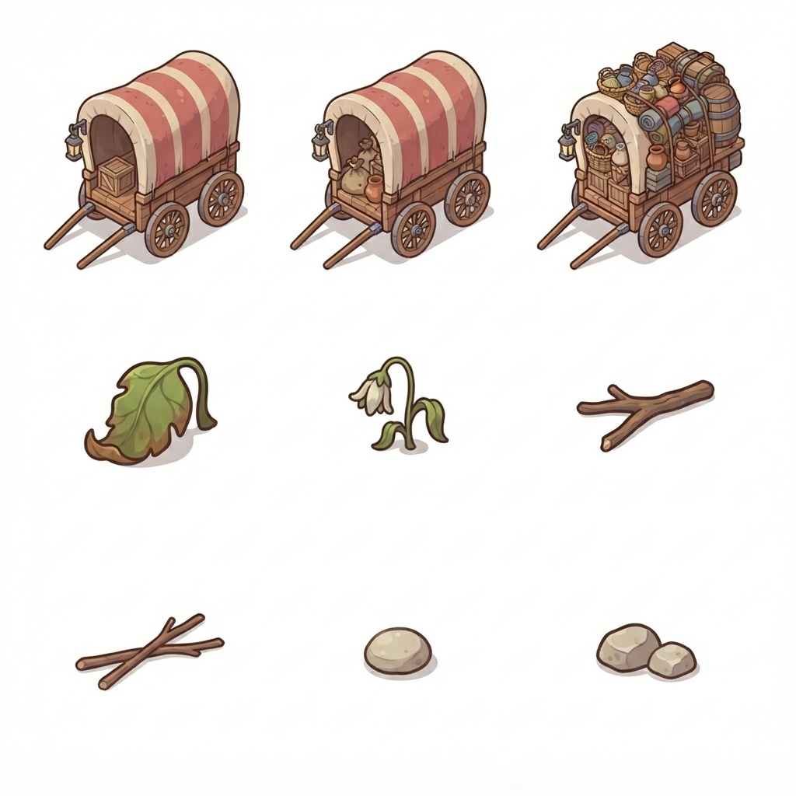
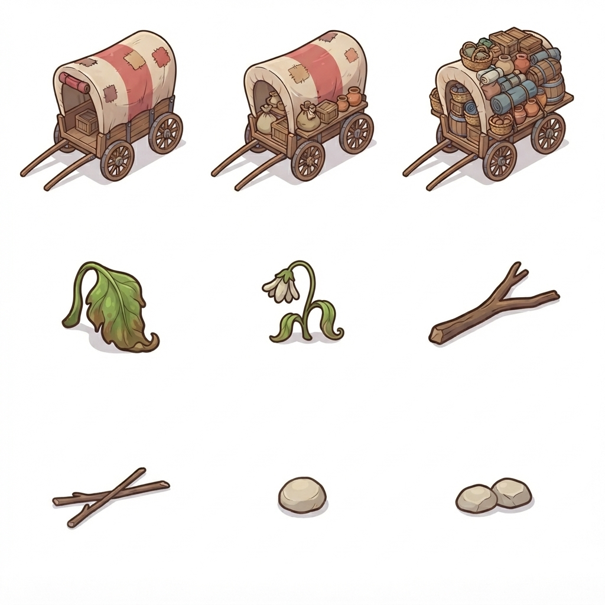
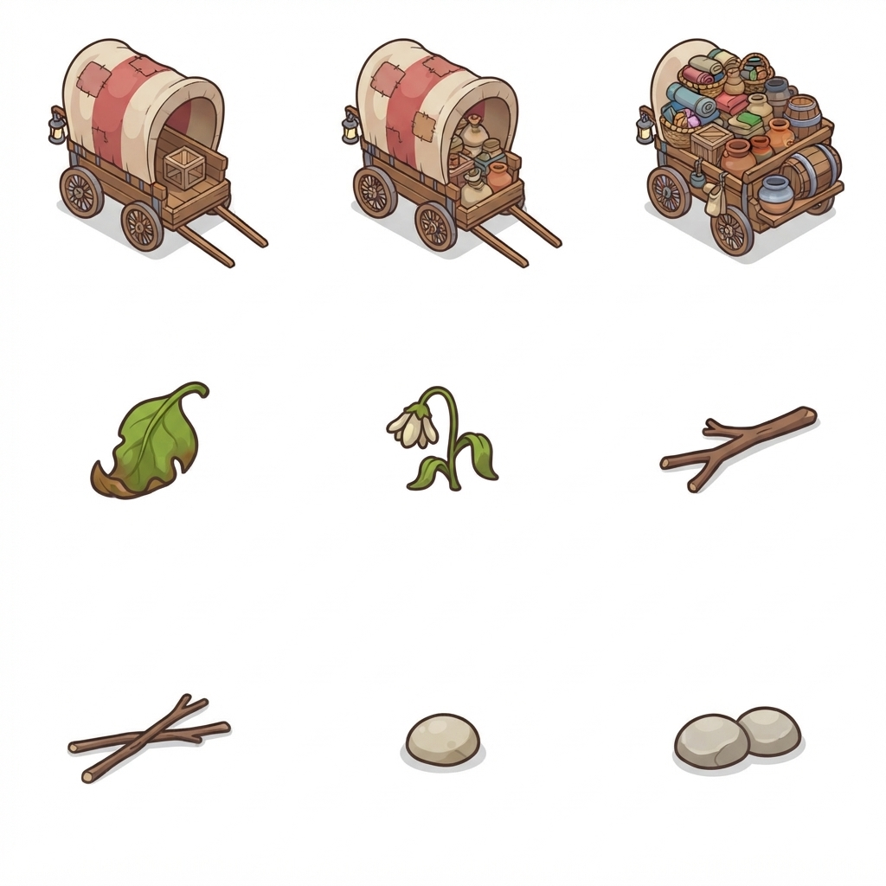

Green frame = the pick used in the game. To swap: python3 .claude/skills/openart-pictures/fetch.py pick sheet55-cart-stale-loose <version>, then import again.



Sprite sheet for a children's farming game, in exactly the art style of reference image 1 (use it only for the style: outlines, colours, shading): bright, friendly mobile-game cartoon, thick rounded dark outlines, flat colours with simple cel shading, chunky cute proportions, three-quarter top-down view (isometric, like Hay Day), each object with a small soft shadow under it. Plain pure white background. No text, no letters, no numbers, no labels, no frames, no grid lines. No people, no animals. Nine separate objects in a tidy grid of 3 rows and 3 columns, evenly spaced with wide white space between them, none touching or overlapping. Every object is one solid piece: no loose bits, crumbs, sparkles or motion lines floating beside it. Row 1, the same travelling merchant's wagon three times, seen from the same angle, filling up from left to right: a small old-fashioned wooden trader's wagon with four spoked wheels, a rounded patched canvas cover in faded red and cream stripes, a lantern hanging at the front and a pull shaft resting on the ground, no horse. (1) the wagon nearly empty, the back open, one small crate inside; (2) the same wagon half full of sacks, crates and clay pots; (3) the same wagon piled full, with baskets, rolled cloth, pots and a barrel strapped on the back and sides. Row 2: (4) a single drooping wilted green leaf turning brown and curling at the edges, a simple bold icon; (5) a small wilted flower with a hanging head and two limp leaves, a simple bold icon; (6) a single forked brown stick lying flat on the ground. Row 3: (7) two thin brown sticks lying crossed on the ground; (8) a single small round grey-beige fieldstone lying on the ground; (9) two small grey-beige fieldstones lying side by side, touching. The three wagons are large and fill their cells; the leaf, flower, sticks and stones are drawn large and clear too, each centred in its own cell.